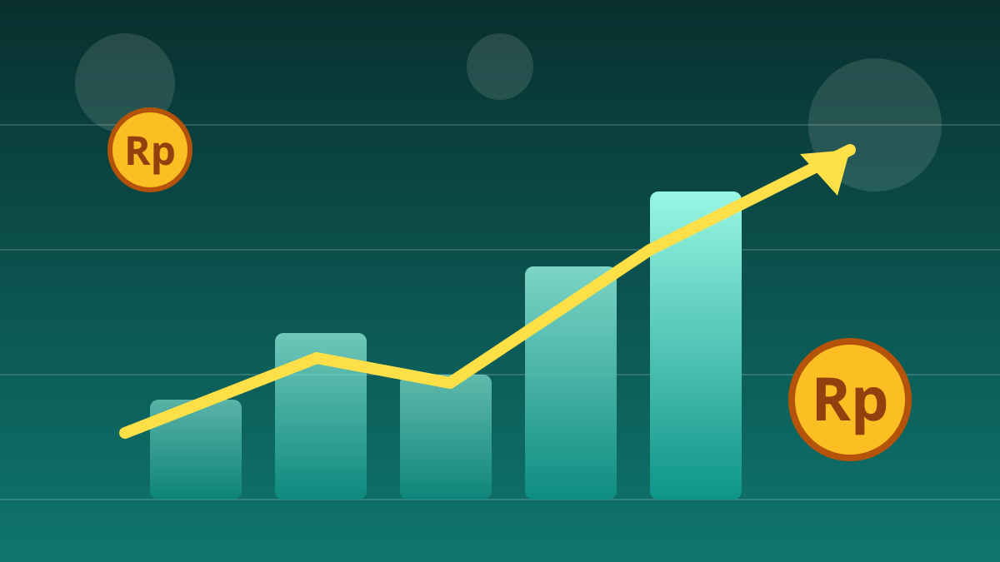

1 / 7

💰 EKONOMI
Menkeu Kaji Rp824 Triliun Dana Pendidikan: Kuliah Gratis, Beneran Bisa?
Rp824 T itu duit pendidikan 2027 — dan Menkeu lagi ngecek beneran ngefek atau nggak. Geser buat hitung-hitungannya →
2 / 7
💵
Rp824 T Itu Buat Apa?
Itu anggaran fungsi pendidikan APBN 2027 — mandat 20% belanja negara yang disepakati pemerintah dan DPR di Rapat Paripurna 29 September 2026. Bukan dana baru khusus kuliah gratis: duitnya tersebar di kementerian pusat sampai transfer daerah. Buat gambaran, anggaran pendidikan 2026 itu Rp720,8 triliun.
3 / 7
🔍
Menkeu Ngevaluasi Efektivitasnya
Menteri Keuangan Suahasil Nazara — ya, dia sekarang Menkeu, bukan Wamenkeu — mengevaluasi apakah mandat 20% itu beneran ngefek ke mutu pendidikan. Tolok ukurnya: APK, APM, sampai skor PISA. Ini menindaklanjuti arahan Presiden Prabowo soal grand design pendidikan.
4 / 7
🎓
Kuliah Gratis: Masih Hitungan, Bukan Kebijakan
Wacana pendidikan gratis dari TK/PAUD sampai PTN masih tahap kajian. Mendiktisaintek Brian Yuliarto spill hitungan awal: gratiskan UKT semua PTN ≈ Rp93,7 triliun per tahun buat ~2,83 juta mahasiswa — masih dibahas bareng Kemenkeu dan Danantara. Presiden juga bentuk tim khusus pimpinan Menko PMK Pratikno dengan tenggat 2 minggu–1 bulan sejak ratas 23 September.
5 / 7
🧮
Pengamat: Duitnya Sebenarnya Cukup
Pengamat JPPI Ubaid Matraji ngitung: gratiskan semua PTN butuh Rp94–98,46 triliun per tahun, SD–SMA Rp365,29 triliun, semua jenjang ≈ Rp569 triliun — masih di bawah pagu Rp824 triliun. Jadi masalahnya bukan duit nggak ada, tapi prioritas anggaran. Catatan jujur: Menkeu juga menegaskan nol anggaran baru dan nol relokasi dari dana MBG buat program pendidikan gratis.
6 / 7
💬
Kata netizen
Di IG @ieltspresso (carousel 2,3K likes): didominasi skeptisisme — banyak yang nyebut wacana ini "omon-omon" dan ngebandingin sama anggaran MBG. Di Threads @kompastv: ada yang senang karena UKT nyata memberatkan, tapi kritiknya tetap dominan. Di Threads @tempodotco: ada yang sinis soal timing-nya yang disebut "berdekatan dengan momen pemilu". (Suara netizen — bukan fakta.)
7 / 7
🤔
Efeknya ke lo apa?
Buat lo yang lagi mikirin UKT: jangan nunggu kuliah gratis jalan — statusnya masih hitungan di meja tim Menko PMK, dan yang ramai diberitakan hari ini mendaur ulang pernyataan Menkeu dari konpers 23–24 September, bukan pengumuman baru. Yang udah jalan sekarang: KIP Kuliah (jalur bebas UKT dengan kuota terbatas), PIP, beasiswa LPDP, dan renovasi kampus. Kalau kebijakannya lolos evaluasi, skema paling realistis itu bertahap — dimulai dari mahasiswa baru atau kelompok ekonomi tertentu. Langkah aman: kejar beasiswa yang ada sekarang, jangan jadikan janji gratis sebagai satu-satunya rencana bayar kuliah.